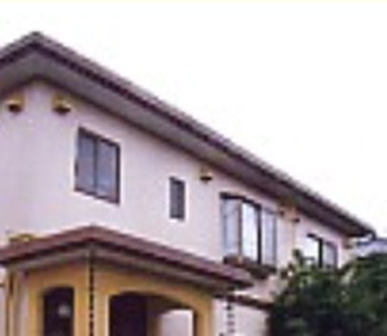
戸建住宅町田市 川上様邸
ホーム ／ 施工例
建物の種類で絞り込めます。

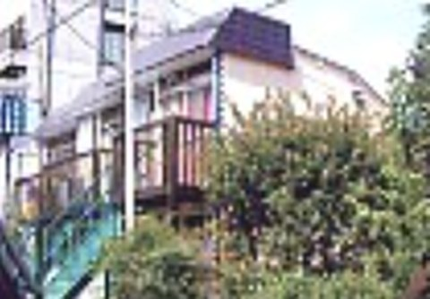
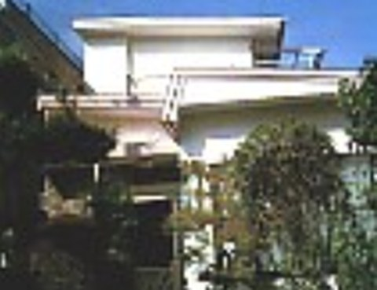
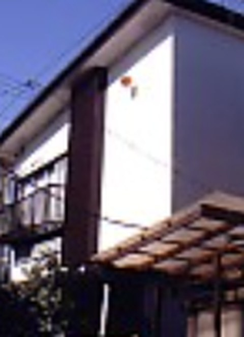
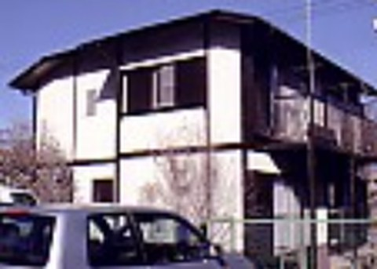
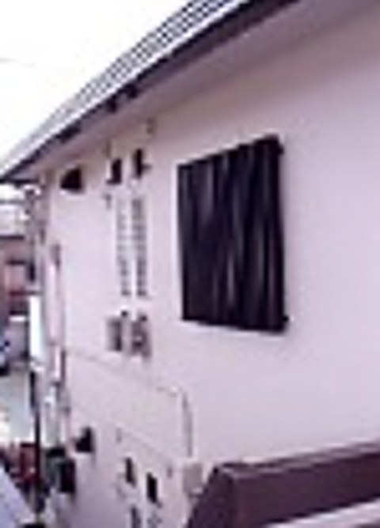
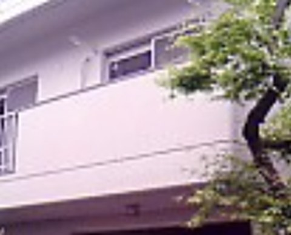
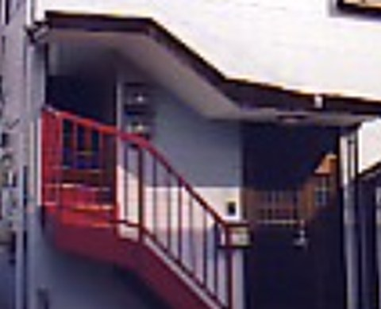
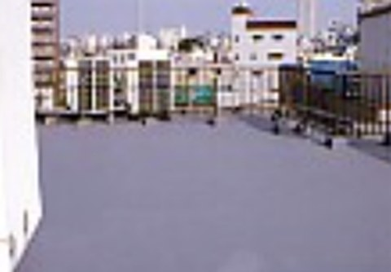
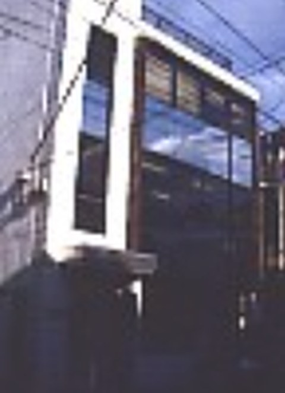
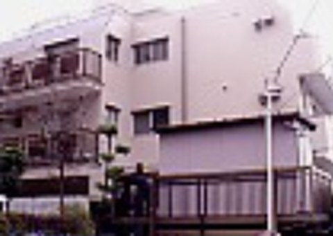
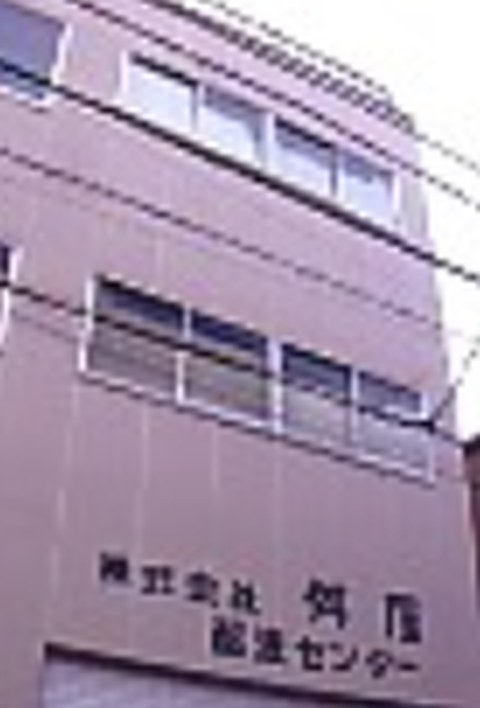
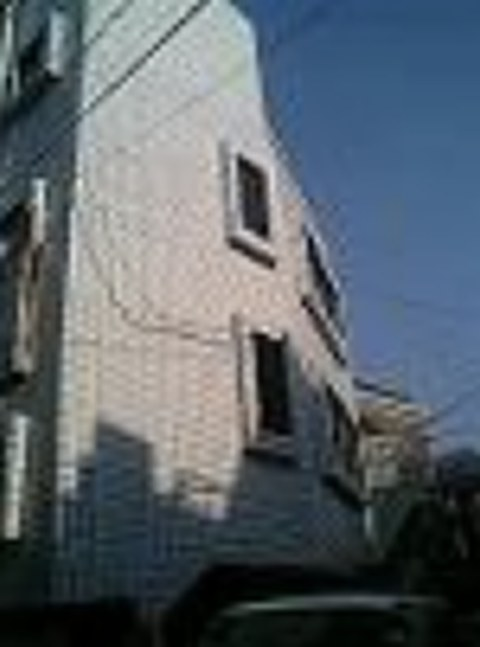
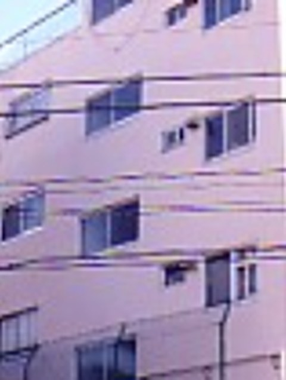
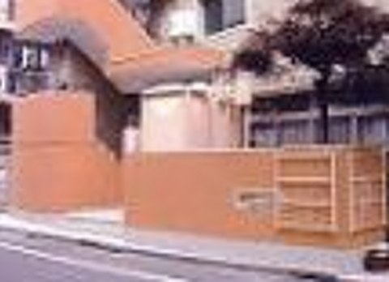
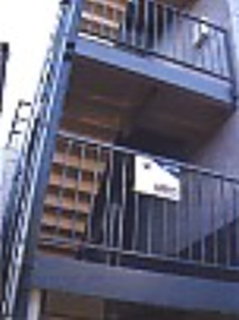
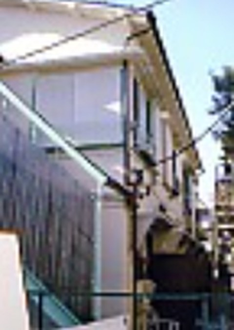
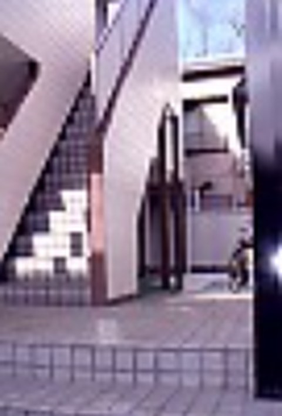
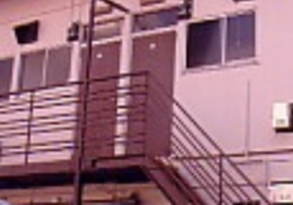
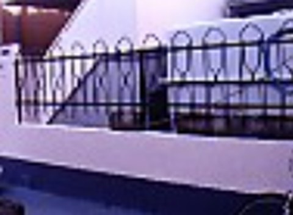
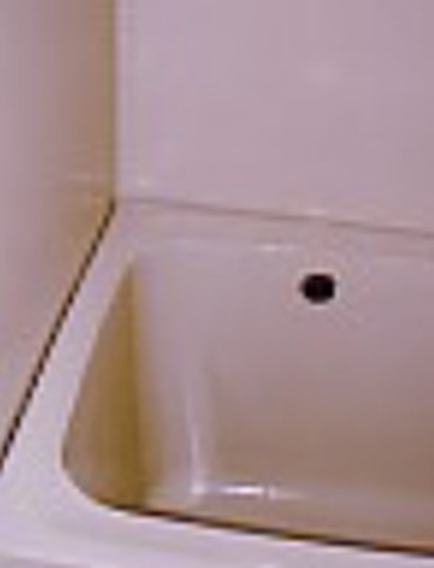
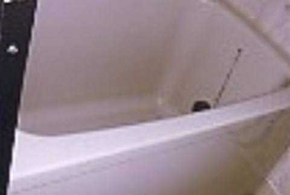
今のホームページの施工例から掲載しています。本番では、施工前・施工後の写真を大きく見られるようにします。
お客様からご依頼いただいた工事の一部です。ご依頼くださいましたお客様には、心より感謝申し上げます。
お伺いして、お客様と一緒にお家の状態を診断してから、確かな金額をお出しします。